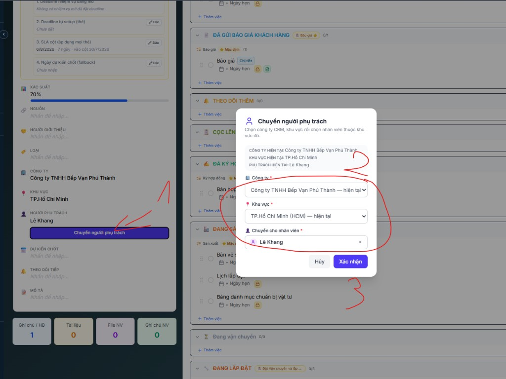

Hướng dẫn — Chuyển Lead/Deal sang công ty CRM khác
TuBep Pro — Admin chuyển Lead hoặc Deal từ công ty A sang công ty B (cùng hệ sinh thái)
Ngày lập: 03/08/2026 · Module: CRM · Nút UI: «Chuyển người phụ trách»
· Ví dụ minh họa: LEAD-2026-999 · Công Ty Metalla → công ty CRM khác
1. Tổng quan luồng
Mở chi tiết Lead / Deal
↓
Bấm «Chuyển người phụ trách»
↓
Chọn Công ty đích → Khu vực → Nhân viên phụ trách
↓
Xác nhận
↓
Hệ thống remap pipeline/stage, sao chép KH (nếu cần), ghi hoạt động
Admin / Admin-like
Được chọn công ty CRM khác trong modal. Nhân viên thường chỉ chuyển khu vực / người phụ trách trong cùng công ty.
NVKD / Sales
Sau khi admin chuyển, thẻ biến mất khỏi Kanban công ty cũ và xuất hiện ở công ty mới (khu vực + người phụ trách đã chọn).
2. Điều kiện & hạn chế
Lead/Deal phải đã có công ty.
Công ty đích phải thuộc module CRM, đang hoạt động, và trong phạm vi hệ sinh thái.
Người phụ trách phải thuộc công ty đích và đã gắn khu vực được chọn.
Không chuyển sang công ty khác nếu Deal đã có đơn hàng hoặc hóa đơn.
Lưu ý: Khi đổi công ty, hệ thống có thể remap pipeline/stage, đồng bộ lại nhiệm vụ CRM theo pipeline mới,
và sao chép / liên kết khách hàng sang công ty đích (theo SĐT nếu trùng).
3. Các bước thao tác
Bước 1
Mở chi tiết Lead hoặc Deal
Vào CRM → Dashboard (Kanban).
Chọn tab Leads hoặc Deals.
Bấm vào thẻ cần chuyển để mở trang chi tiết.
Bấm nút tím Chuyển người phụ trách (thanh thao tác hoặc dòng NGƯỜI PHỤ TRÁCH bên trái).
Tooltip nút: «Chuyển công ty/khu vực và người phụ trách».
Bước 2
Mở popup và chọn công ty đích
Bấm Chuyển người phụ trách.
Popup hiện công ty / khu vực / phụ trách hiện tại.
Ở ô Công ty *, chọn công ty CRM đích (không chọn «— hiện tại» nếu muốn đổi công ty).
Chọn Khu vực * thuộc công ty đích.
Chọn nhân viên phụ trách * (phải thuộc khu vực đó).

Hình 1 — Modal «Chuyển người phụ trách»: (1) mở nút → (2) Công ty → Khu vực → Nhân viên → (3) Xác nhận
Bước 3
Xác nhận
Kiểm tra lại công ty / khu vực / nhân viên.
Bấm Xác nhận (nút chỉ bật khi đã chọn đủ 3 trường).
Hệ thống báo thành công; hoạt động được ghi trên thẻ (ví dụ: đã chuyển sang công ty «…»).
Lọc Kanban theo công ty mới để thấy thẻ; công ty cũ sẽ không còn thẻ đó.
4. Hệ thống làm gì khi đổi công ty?
Hạng mục
Hành vi
Công ty, khu vực, phụ trách
Cập nhật theo lựa chọn trong modal
Khách hàng
Sao chép sang công ty đích, hoặc liên kết bản ghi trùng SĐT nếu đã có
Pipeline / stage
Remap theo pipeline CRM của công ty + khu vực đích
Nguồn / loại lead
Map taxonomy tương ứng (nếu có) sang công ty đích
Nhiệm vụ CRM
Có thể đồng bộ lại theo bộ mẫu pipeline mới khi pipeline đổi
Đơn hàng / hóa đơn
Nếu đã có → chặn chuyển sang công ty khác
5. Sự cố thường gặp
Triệu chứng
Nguyên nhân / cách xử lý
Không thấy ô chọn Công ty
Tài khoản không phải admin-like, hoặc chỉ có 1 công ty CRM trong phạm vi
«Công ty chưa có khu vực»
Vào CRM → Khu vực, thêm khu vực cho công ty đích trước
Không chọn được nhân viên
NV chưa gắn khu vực đích (user_company_regions) hoặc không thuộc công ty đích
«Đã có đơn hàng hoặc hóa đơn»
Không được chuyển công ty — giữ nguyên hoặc xử lý chứng từ trước
Thẻ «biến mất» sau khi chuyển
Đổi bộ lọc Công ty trên Kanban sang công ty đích
6. Không nhầm với các nút khác
Chuyển Deal (nút xanh): chuyển Lead → Deal (cùng công ty), không đổi công ty CRM.
Chuyển công ty SX (trên Deal thắng / dự án): gắn xưởng sản xuất, khác với chuyển công ty CRM ở hướng dẫn này.